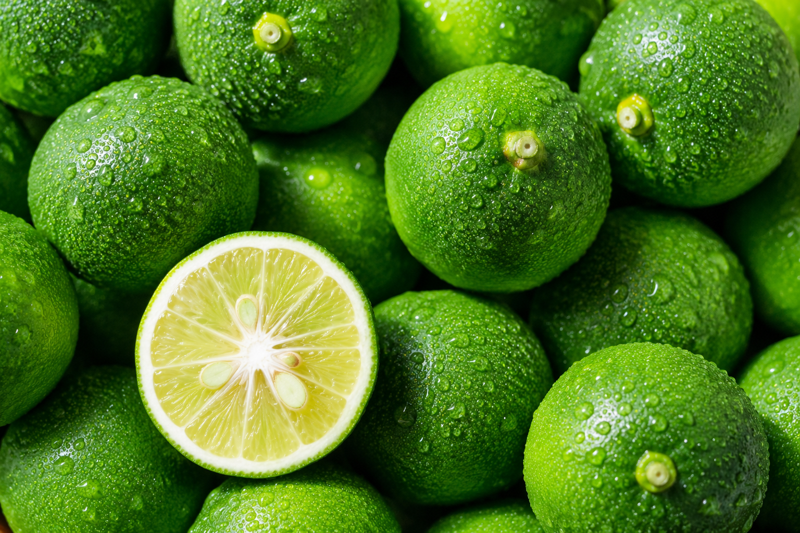

すだちとは？

すだち（Sudachi）は、ほぼ徳島県でのみ栽培されている、極めて希少な日本の柑橘です。その香りはレモンよりも澄んでいて、ライムよりもやさしく、苦味が少ない。皮から立ちのぼる青々しく爽やかな香りが最大の特徴であり、その高貴な芳香はしばしば「日本の山里の朝の空気」にたとえられます。曲風園では、この野生の香水とも言えるすだちの乾燥ピールを、人工香料や添加物を一切使わない「完全無香料」のまま、大歩危の峻険な山々で育まれたクラフト和紅茶へと編み込みました。一口含めば、秘境の清らかなテロワールと、鮮烈なシトラスの風が脳裏に突き刺さるはずです。
すだち×和紅茶

この美しい融合を導き出したのは、ソムリエのように茶の品種や味を見極める最高峰の国家段位「茶審査技術 九段位」を持つ3代目・曲大輝の卓越した技術です。ベースとなるのは、自社茶園にて無農薬で育てられた、緑茶の高級品種「やぶきた」。春の瑞々しい一番茶を極上の煎茶へと仕上げた後、少し肥料分の抜けた夏の二番茶を丁寧に萎れさせ、じっくりと揉み込んで酸化させることで、和紅茶特有のどこか優しくほのかに甘い奥深い風味に仕立て上げます。これまで活用しきれていなかった二番茶の生命に新たな価値を与え、すだちの芳香と完璧な調和を魅せる。伝統に縛られず、「新しい試みに挑戦してこそ文化は繋がっていく」という、秘境の若きクラフトマンシップの思いが詰まった一品です。